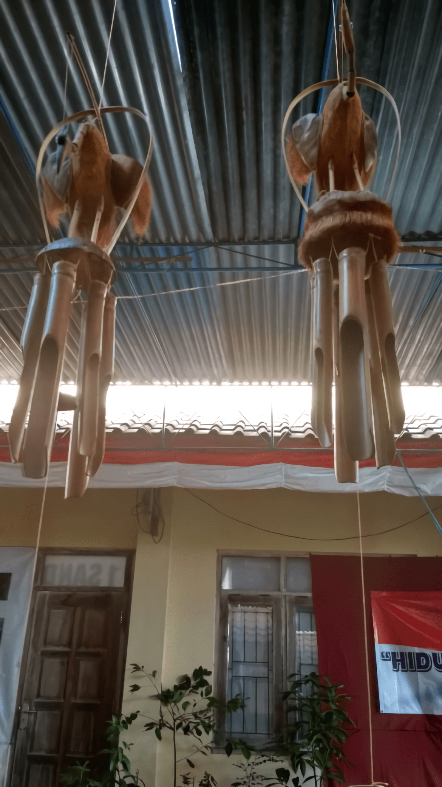
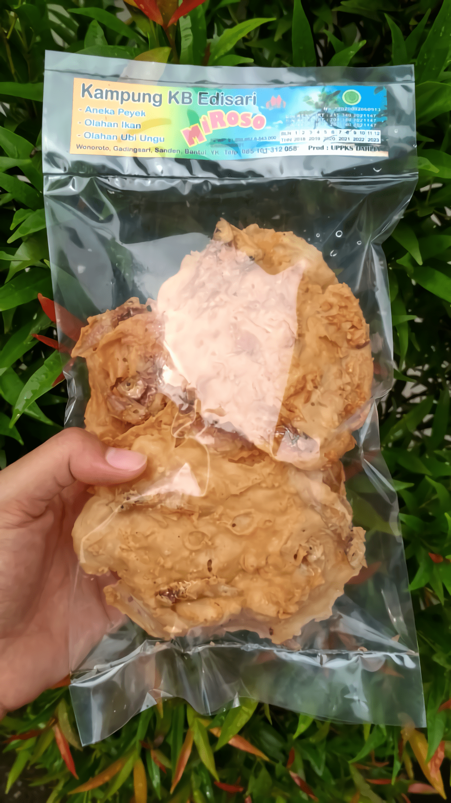
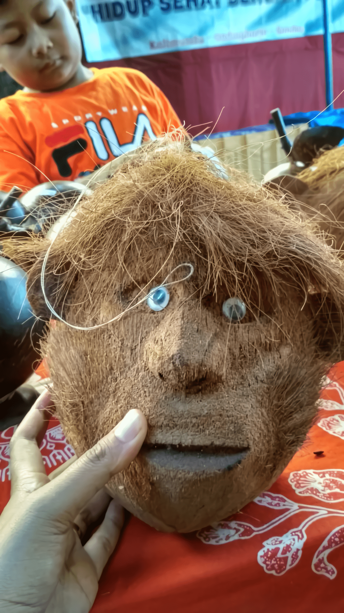

Selain memiliki panorama pantai yang indah serta hasil alam yang melimpah, Desa Gadingsari juga memiliki produk olahan dan cenderamata lokal yang sangat sayang jika anda lewatkan. Jika anda sedang berwisata di wilayah Bantul maka jangan lupa untuk memasukkan Desa Gadingsari ke dalam list liburan anda. Selain dapat menikmati indahnya pemandangan pantai dengan rimbunnya pohon cemara, Desa Gadingsari juga menawarkan berbagai macam produk lokal kreasi masyarakat desa. Produk-produk lokal tersebut sangat cocok dijadikan sebagai oleh-oleh untuk orang-orang tersayang atau sebagai memori pengingat jika anda pernah berkunjung ke Desa Gadingsari.
Desa Gadingsari terletak di Kecamatan Sanden, Bantul. Jaraknya hanya sekitar 12 km dari Kota Bantul dan memiliki akses jalan yang sudah beraspal halus. Produk-produk kreasi masyakarat Desa Gadingsari memiliki berbagai macam jenis, mulai dari makanan hingga pernak-pernik dan kerajinan. Alasan mengapa anda tidak boleh melewatkan berbagai produk lokal dari Desa Gadingsari adalah karena Produk kreasi masyarakat tersebut sebagian besar memanfaatkan hasil alam yang terdapat di Desa Gadingsari. Fakta tersebut yang menjadikan produk lokal Desa Gadingsari menjadi produk yang khas dan “memorable”.
Jika anda memiliki hobi ngemil, maka salah satu produk olahan kreasi masyarakat Desa Gadingsari ini cocok sekali untuk anda. Produk tersebut adalah Miroso. Miroso merupakan produk olahan makanan yang memiliki berbagai varian jenis, seperti aneka peyek, makanan dari olahan ikan, dan makanan dari olahan ubi ungu. Rumah produksi Miroso dapat anda jumpai di Dusun Wonoroto Rt 02, Kelurahan Gadingsari, Kecamatan Sanden, Bantul.
Jika anda mencari cenderamata untuk mengabadikan pengalaman berwisata anda di Desa Gadingsari maka produk kreasi cumplung kelapa merupakan pilihan yang cocok untuk anda. Cumplung kelapa merupakan kerajinan dari tempurung kelapa. Kerajinan cumplung kelapa ini sangat unik dan cocok dijadikan sebagai cenderamata. Anda dapat menjumpai lokasi produksi kerajinan cumplung kelapa di Dusun Wonorejo I, Kelurahan Gadingsari, Kecamatan Sanden, Bantul.
Selain kedua produk lokal yang telah disebutkan diatas, masih terdapat berbagai macam produk kreasi masyarakat Desa Gadingsari yang sayang untuk dilewatkan. Produk-produk tersebut antara lain Kerajinan Angklung, Batik Tulis, Batik Ecoprint, Kuliner Adrem, Kuliner Sago Gulung, Peyek Ciptodiharjo, Intip Tipgar, Jamu Jawa, Gula Jawa Mbah Harto, dan Tempe Mbah Warno.